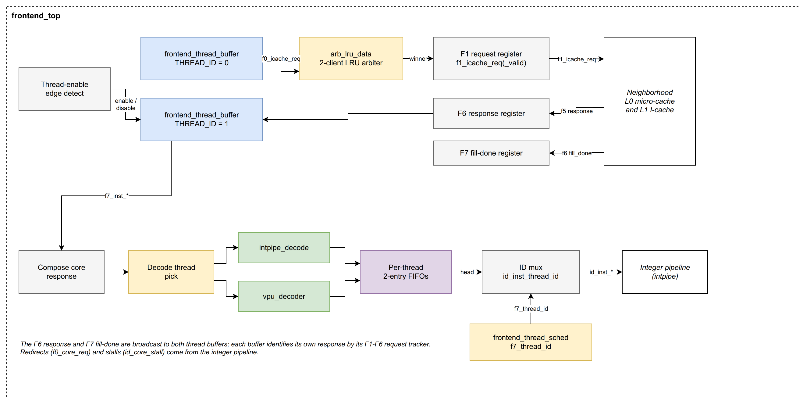
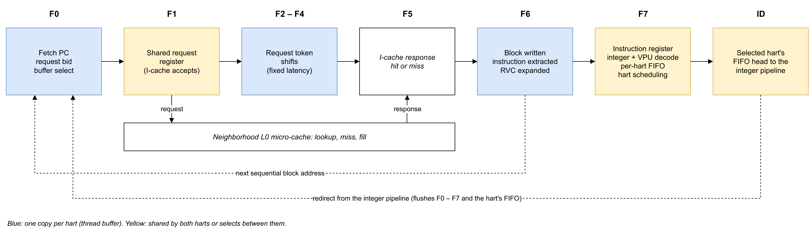
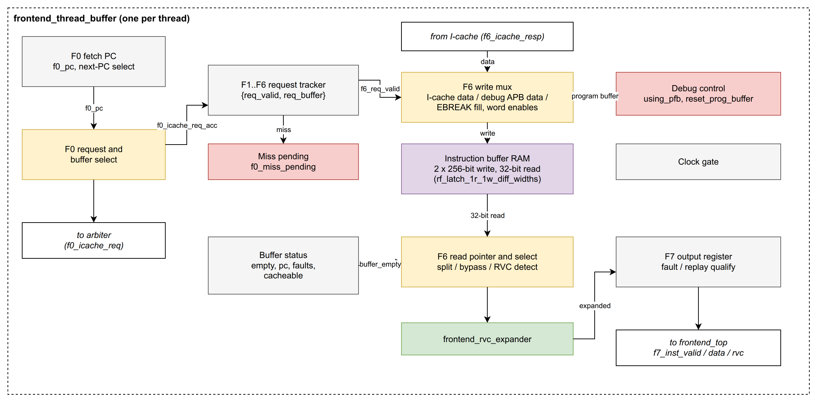

About These Notes
These study notes explain how the ET-Minion Front End works: its structure, the reason behind each mechanism, and the complete flow of an instruction from fetch address to the integer pipeline. They are written from the RTL and are the working basis for the Instruction Fetch chapter of the micro-architecture reference.
- Scope
-
All modules that the Front End contains or instantiates:
Module Role frontend_topShared request port, response registers, decoders, per-hart instruction queues, ID-stage output
frontend_thread_bufferPer-hart fetch PC, request tracking, instruction buffers, instruction extraction, debug program buffer
frontend_thread_schedChoice of hart presented to the integer pipeline
frontend_rvc_expanderCompressed-instruction expansion
intpipe_decode,vpu_decoderInteger and VPU instruction decode
arb_lru_data/arb_lruRequest arbitration between harts
rf_latch_1r_1w_diff_widths,et_clk_gateInstruction buffer storage, clock gating
- Stage names
-
The RTL names the Front End stages F0 to F7 and the first integer-pipeline stage ID. A signal prefix (
f0_,f6_,id_) names the stage in which the signal is valid. Signal names are given in the text where they help locate the logic. - Hart
-
The ET-Minion core runs two hardware threads. The RTL calls them threads; these notes use hart.
1. Role of the Front End
The Front End supplies instructions to the integer pipeline for both harts of an ET-Minion core. It sits between two neighbours:
-
Neighborhood L0 micro-cache (reached through the Neighborhood instruction-cache logic). The Front End sends it one fetch request at a time, each for a 32-byte aligned block, and receives the block, a miss indication, or fault and error status.
-
Integer pipeline. The Front End presents one decoded instruction per cycle in the ID stage. In the other direction, the integer pipeline sends per-hart redirects (a new fetch PC) and per-hart stalls.
Per hart, the Front End:
-
holds a fetch PC and requests the next 32-byte block when it has room for it;
-
stores returned blocks in a pair of 32-byte instruction buffers;
-
extracts instructions from the buffers in program order, one per cycle, and expands compressed instructions to 32 bits;
-
decodes each instruction for the integer pipeline and for the VPU;
-
queues decoded instructions in a two-entry queue until the integer pipeline takes them.
Across both harts, it arbitrates the single request port to the micro-cache, shares one set of decoders, and chooses which hart’s instruction is presented in ID.
The Front End also restarts fetch on redirects, delivers a placeholder instruction when a halt is pending, and executes the debug program buffer in debug mode.

1.1. Per-Hart and Shared Resources
| One per hart | Shared by both harts |
|---|---|
Fetch PC, miss state, request tracker ( |
Request arbiter and F1 request register |
1.2. Design Choices in Brief
These choices shape everything that follows; each is explained in its own section.
- One outstanding request per hart
-
A hart issues a new request only after its previous request has completed. This removes any need to reorder responses.
- Ownership by timing
-
Responses carry no hart identifier. Each hart knows which response is its own by tracking its request through a fixed number of stages (Section 3.5).
- Double buffering
-
Two 32-byte buffers per hart let the next block be fetched while the current block is being consumed.
- Halfword-addressed buffers
-
Instructions are read at any 16-bit boundary, so 16-bit and 32-bit instructions mix freely, including a 32-bit instruction that crosses from one buffer into the other.
- Bypass
-
The first instruction of an arriving block can be extracted in the same cycle the block is written.
- Decode in the Front End
-
Both decoders run in F7, before the instruction queue, so the integer pipeline receives decoded control fields in ID.
- Alternating issue
-
When both harts have an instruction ready, they are presented to ID in alternate cycles.
2. Pipeline Overview

2.1. Stages
| Stage | Work done |
|---|---|
F0 |
Each hart holds its fetch PC. A hart that has a free buffer and no request in flight bids for the shared request port. The arbiter grants one hart, and the granted hart records which of its buffers will receive the block. Redirects from the integer pipeline arrive in this stage. |
F1 |
The granted request sits in the shared F1 request register and is presented to the micro-cache until accepted. |
F2–F4 |
The micro-cache processes the request. The Front End does nothing with it except move the owning hart’s tracking token forward. |
F5 |
The micro-cache returns the response: a 32-byte block, or a miss, plus fault and error status. |
F6 |
The response is registered and broadcast to both harts. The owning hart writes the block into the reserved buffer, or records the miss. In the same stage the hart reads the next instruction from its buffers, bypassing the arriving block when needed, and expands it if it is compressed. |
F7 |
Each hart holds one expanded instruction. One hart per cycle is chosen for decode; its instruction passes through both decoders and enters its queue. The scheduler chooses the hart for ID. |
ID |
The oldest queued instruction of the chosen hart is presented to the integer pipeline. |
2.2. Latency and Throughput
These figures assume L0 hits and no competing requests. The Neighborhood captures each request in a per-thread register before its 8:1 arbiter, so a request is accepted no earlier than its second F1 cycle.
| Path | Cycles | Notes |
|---|---|---|
Request in F0 to first instruction in ID |
9 |
F0 → F1 (two cycles) → F2 → F3 → F4 → F5 → F6 (write and bypass) → F7 → ID. |
Hart enable to first instruction in ID |
11 |
The enable is registered, then the reset PC is loaded, then the first request issues (Section 7.1). |
Redirect to first target instruction in ID |
10 |
No request in the redirect cycle; the target is requested in the next cycle. |
Interval between requests of one hart |
8 (minimum) |
A new request waits until the previous one has left F6. |
Instructions extracted per hart |
1 per cycle |
In F6. |
Instructions presented in ID |
1 per cycle |
For the whole core, from one hart. |
One 32-byte block holds eight 32-bit instructions, or up to sixteen compressed ones. A hart that receives one block every eight cycles therefore gets more instructions than the single ID slot can take, once both harts share it.
2.3. Stall and Flush Points
Backpressure enters the Front End in two places:
-
Micro-cache not ready. The F1 request register holds its request, and no new request is granted.
-
Queue full. A hart whose queue is full does not pop its F7 register; F7 then holds, and F6 stops extracting.
Stages F2 to F6 never stall. The micro-cache must return the response in F5 regardless of what the Front End is doing, and the Front End is always able to take it because each hart only requests when a buffer is reserved for the block.
A redirect for a hart flushes that hart’s state in all stages in the same cycle (Section 7.2).
3. Fetch Request Path
This section follows a request from the fetch PC of a hart to the point where its response is recognised in F6.

3.1. Fetch PC
Each hart keeps a 49-bit fetch PC, f0_pc. The PC is 49 bits rather than 48 so that a non-canonical 64-bit address can still be represented: the extra top bit records whether the upper address bits were a proper sign extension.
The fetch PC always points at the next block to request. It changes only on these events:
| Event | New fetch PC |
|---|---|
Reset, or the hart being enabled |
Reset vector (48 bits, sign-extended). |
A block is written into a buffer |
Start of the following 32-byte block. The address is taken from the block just written, with its offset cleared and its block number incremented. |
Redirect from the integer pipeline |
Redirect PC. This has the highest priority. |
The first block after a reset or redirect can therefore start in the middle of a 32-byte block; every following block is aligned. The request always carries the full address, including the offset, and the micro-cache returns the whole aligned block that contains it.
A miss does not change the fetch PC, so the same address is requested again after the fill (Section 7.3).
3.2. When a Hart Requests
A hart issues a request in F0 only when all of the following hold. Each condition has a clear purpose:
| Condition | Purpose |
|---|---|
Hart enabled, and not in the cycle it is being enabled |
The reset vector is loaded at the end of the enable cycle, so the first request follows one cycle later. |
No redirect this cycle |
The redirect PC is loaded at the end of this cycle. |
No unresolved miss |
After a miss, the hart waits for a fill before asking again (Section 7.3). |
No request of this hart anywhere in F1–F6 |
Only one request per hart is in flight. This keeps responses in order and makes ownership by timing possible. |
A buffer is free, or is being freed this cycle |
The returning block must have a place to go. The Front End cannot stall a response. |
Not in reset, not executing the debug program buffer |
While the program buffer is in use, the buffers hold debugger instructions, not fetched code. |
The request payload carries the hart number, the hart’s virtual-memory status (privilege, mstatus fields that affect translation, debug mode), and the fetch address. The Front End only forwards the virtual-memory status; the micro-cache uses it for translation and permission checks.
When a halt is pending, the hart goes through the same request decision but does not actually bid for the port; the resulting placeholder request is handled internally (Section 7.5).
3.3. Reserving a Buffer
When the request is granted, the hart reserves the buffer that will receive the block and records the request address as that buffer’s base address. A buffer qualifies if it is empty, or if its last instruction is leaving this cycle and it is not being written in the same cycle. If both qualify, buffer 1 is chosen, so after a reset or redirect the first block always lands in buffer 1.
The recorded base address serves three later purposes: it gives the word range to write (words before the request offset are not written), the starting halfword for extraction, and the upper PC bits of every instruction taken from the buffer.
3.4. Shared Request Port
Both harts share one request port to the micro-cache. It consists of a two-client arbiter in F0 and a single request register in F1.
- Arbiter
-
A least-recently-granted arbiter (
arb_lru_data). With one bidder, that bidder wins. With two, the hart that was not granted last time wins, so contending harts alternate. After reset, hart 0 wins the first tie. The arbiter’s priority state changes only when a grant is actually issued. - F1 request register
-
The winning request is registered and held on the port until the micro-cache accepts it. The register can take a new request when it is empty or when its current request is being accepted in this cycle. When it cannot, the arbiter issues no grant, the bidding hart keeps bidding, and nothing is lost.
The grant is returned to the winning hart in the same cycle as its bid. From that moment the hart treats the request as its own in-flight request.
3.5. Recognising the Response
The micro-cache response has no hart identifier. The Front End recognises the owner by timing: a response appears in F5 exactly four cycles after the request was accepted from F1.
To use this, each hart moves a small token (a valid bit and the reserved buffer number) through its own copy of stages F1 to F6:
-
The token enters F1 when the hart’s request is granted, and stays in F1 while the shared request register waits for acceptance.
-
When the micro-cache accepts, the token advances one stage per cycle through F2, F3, F4 and F5, without ever stalling.
-
In F6 the token lines up with the registered response. If the token is valid in the same cycle as a response, the response belongs to this hart, and the token says which buffer to write.
In the Neighborhood, the request is first captured in a per-thread register in front of an 8:1 arbiter; the Front End request is accepted when that arbiter grants it, no earlier than the second F1 cycle.
This makes a strict interface requirement on the micro-cache: it must return exactly one response per accepted request, exactly four cycles after acceptance, and never hold or reorder them.
3.6. Cancelling an In-Flight Request
A redirect for a hart invalidates that hart’s token in every stage, so the eventual response is ignored and nothing is written.
A request still waiting in the F1 register is a special case. The register is shared, so a redirect cannot remove the request from it. Instead the hart remembers the cancellation while the request waits, and does not advance the token when the micro-cache accepts it. The request is therefore still looked up in the micro-cache, but its response is discarded. Until it is accepted, it also blocks the shared register, so the redirected hart’s new request waits behind it.
4. Instruction Buffers
4.1. Organisation
Each hart has two 32-byte instruction buffers, numbered 0 and 1. Together they form one small latch-based memory (rf_latch_1r_1w_diff_widths) with two ports of different width:
-
Write port, 256 bits. One write stores a whole block into one buffer. Each of the eight 32-bit words has its own write enable.
-
Read port, 32 bits, at any halfword. The read address is a 5-bit halfword position: the top bit selects the buffer, the lower four bits the halfword (0–15) within it. The read returns the 32 bits that start at that halfword.
The read port wraps around: the memory behaves as a ring of 32 halfwords in which halfword 15 of buffer 1 is followed by halfword 0 of buffer 0. A 32-bit instruction that starts in the last halfword of either buffer is therefore read in one access, with its upper half coming from the other buffer. The RTL calls this a split instruction.
The read pointer (f6_buffer_ptr) is a 5-bit halfword position of the same form. Advancing it past halfword 15 of one buffer moves it naturally into the other, so the two buffers are consumed as one continuous ring.
4.2. Buffer State
For each buffer the hart keeps:
| State | Meaning |
|---|---|
Empty flag |
The buffer holds nothing still to be sent. Both buffers are empty after reset. |
Base address |
Address of the request that filled the buffer (Section 3.3). |
Fault flags |
Page fault and access fault reported with the block. |
Error flags |
Bus error and ECC error reported with the block. |
Cacheable flag |
The block came from a cacheable region. Used for replay (Section 5.6). |
A buffer’s empty flag changes as follows, highest priority first:
-
Last instruction leaves. When the instruction that ends the buffer moves from F6 to F7, the buffer becomes empty and can be reserved again.
-
Block written. The buffer becomes full.
-
Fault or error without data. If the response for this buffer reports a fault or error but no data is written (a miss response), the buffer is still marked full. The only purpose is to deliver the fault to the integer pipeline: the next instruction extracted from the buffer carries the fault status.
-
Redirect or hart disable. Both buffers become empty.
Debug mode adds two overrides: on entry to debug mode both buffers are emptied, and when the program buffer is launched, buffer 0 is marked full and buffer 1 empty (Section 7.6).
4.3. Writing a Block
The block is written in F6, when the hart’s token and a response meet (Section 3.5):
-
A hit writes the block. Only the words from the one containing the request address up to word 7 are enabled. For an aligned request this is the whole block; for the first block after a redirect into the middle of a block, the unused leading words are not written.
-
A miss writes nothing and sets the hart’s miss state.
-
The fault, error and cacheable flags are recorded for the reserved buffer.
The same F6 cycle can also extract the first instruction of the block, before it is stored (Section 5.3).
- Latch write timing
-
The buffer memory is built from latches and needs its per-word write-data enables one clock phase before the write. The hart therefore computes these enables one cycle early, in F5, from its token and the raw (not yet registered) miss indication of the F5 response, and passes them through a phase latch. The actual word write enables are applied in F6. This is the only use of the unregistered F5 response inside a hart.
- Other write sources
-
The same write port is used to load the debug program buffer, and to fill buffer 0 with
EBREAKinstructions on entry to debug mode (Section 7.6).
5. Instruction Extraction
Extraction takes one instruction per cycle from a hart’s buffers in F6 and hands it to the hart’s F7 register.
5.1. Starting Position
When both buffers are empty, the read pointer has no valid position. As soon as the hart’s token reaches F5, one cycle before the block arrives, the pointer is set to the halfword where the request address starts inside the reserved buffer. This is how fetch begins in the middle of a block after a reset or redirect. For an aligned request it simply points at halfword 0 of the reserved buffer.
Once a buffer holds data, the pointer only moves forward from instruction to instruction.
5.2. Stepping Through the Buffers
In each cycle the memory is read at the pointer and the two lowest bits of the returned data are checked:
-
If they are not
11, the instruction is compressed (16 bits) and the pointer advances by one halfword. -
Otherwise the instruction is 32 bits and the pointer advances by two halfwords.
The pointer advances only when the instruction actually moves to F7. When the advance carries it into the other buffer, the instruction is the last one of its buffer, and that buffer becomes empty in the same cycle.
An instruction is available in F6 when the buffer it is read from holds data. A split 32-bit instruction (Section 4.1) needs both buffers to hold data.
5.3. Bypass of an Arriving Block
If the pointer’s buffer is empty but the block for it is being written in this cycle, the instruction is taken directly from the arriving response instead of from the memory. The same applies to the upper half of a split instruction whose second buffer is being written. The instruction can therefore move to F7 in the same cycle its block arrives, which saves one cycle on every fetch after a redirect, a miss, or a drained buffer.
The bypass does not check that the arriving block belongs to the buffer being read. It relies on two properties of the design: a hart has only one request in flight, and extraction waits only on an empty buffer, so an arriving block is always the one extraction is waiting for.
5.4. Compressed-Instruction Expansion
The selected 32 bits pass through frontend_rvc_expander in the same cycle. The expander is a combinational RV64C decompressor:
-
A compressed instruction is rewritten as its 32-bit equivalent. Encodings that are reserved in the C extension are rewritten to an opcode the integer decoder does not recognise, so they are reported as illegal instructions.
-
A 32-bit instruction passes through unchanged.
-
An all-zero halfword (the defined illegal compressed instruction) produces all zeros.
From F7 onward every instruction is a 32-bit instruction. A separate flag records that the original was compressed; the integer pipeline uses it to step the PC by 2 instead of 4, for both the next sequential PC and the return address of a jump. The full expansion table is in Appendix C.
The expander also expands the double-precision compressed loads and stores. The ET-Minion integer decoder has no double-precision FLD/FSD, so they end up reported as illegal.
5.5. F7 Instruction Register
Each hart has a one-entry F7 register holding the expanded instruction, its compressed flag, its read position, whether it was split, and the upper PC bits of its buffer.
F7 behaves as a simple pipeline register with a valid/ready handshake to frontend_top: it takes a new instruction from F6 when it is empty or being popped in the same cycle, and holds otherwise. When F7 holds, F6 does not extract. A redirect, or entry to debug mode, invalidates it.
The PC of the instruction is not stored as a whole. It is rebuilt from the buffer’s upper address bits and the halfword position of the instruction within the buffer.
5.6. Fault, Error and Replay Status
The F7 register also produces the fetch status of the instruction from the flags of the buffer(s) it came from:
- Faults
-
Page fault and access fault come in two sets. Set 0 belongs to the buffer that holds the start of the instruction. Set 1 is used only for a split instruction and belongs to the buffer that holds its upper half. The integer pipeline can therefore tell whether a fault belongs to the first or the second part of the instruction.
- Errors
-
Bus error and ECC error are taken from the instruction’s buffer. For a split instruction they are combined over both buffers.
- Replay
-
Set when the instruction comes from a non-cacheable block and the integer pipeline reports that this hart has older instructions still in flight (the
speculativebit of the redirect interface, which the integer pipeline drives in every cycle, not only with a redirect). The status is evaluated while the instruction waits in F7 and captured when it enters the queue. Replay handling itself is in the integer pipeline; the legacy Front End–integer pipeline description gives the intent: code from non-cacheable space is not used while older instructions are still in flight.
While the debug program buffer is being executed, all fault, error and replay status is forced to zero.
6. Decode, Queueing and Issue
This part of the Front End is in frontend_top. It takes instructions from the two F7 registers, decodes them, queues them per hart and presents one of them to the integer pipeline.
6.1. Choosing the Hart to Decode
There is one pair of decoders, so one hart per cycle can move an instruction from its F7 register into its queue. A hart is a candidate when its F7 register holds an instruction, its queue has room, and the scheduler considers it awake (enabled and not stalled, Section 6.4).
-
If only one hart is a candidate, it is chosen.
-
If both are, the hart that is not currently presented in ID is chosen, so decode alternates in step with issue.
-
If neither is, the same default applies (the hart not in ID) and no candidate condition is checked.
The transfer itself happens when the chosen hart has a valid F7 instruction and a queue with room. The awake condition affects only the choice, not the transfer.
6.2. Decoders
The chosen instruction goes through two combinational decoders in parallel. Both are case tables over the 32-bit instruction; an encoding not listed falls to a default entry.
- Integer decoder (
intpipe_decode) -
Produces the integer-pipeline control word (
minion_control, Section B.8): whether the instruction is legal, whether it is emulated in software (M-code), register reads and writes, ALU operand and function selects, immediate format, memory command and size, CSR command, fence, and Esperanto-specific attributes (global memory access, gather/scatter, graphics, mask registers, implicit use ofx31). An unlisted encoding decodes as not legal, which the integer pipeline turns into an illegal-instruction exception.The table covers the base integer, 64-bit, multiply/divide and single-precision FP instructions, the Esperanto atomics, local/global and packed loads and stores, packed single-precision and packed integer vector operations, mask operations, graphics operations, and a group of M-code instructions (for example FP divide and square root, 64-bit FP conversions,
FENCE.I,SFENCE.VMA) that trap for software emulation. TheENABLE_EXTRA_TRANSdefine moves two packed transcendental instructions from the M-code group to hardware execution in the VPU. - VPU decoder (
vpu_decoder) -
Produces the VPU control word (
vpu_ctrl_sigs_t, Section B.9): VPU function, execution unit, data type, scalar or packed, source and destination register reads and writes, mask register use, operand swaps, rounding and flag update. It also reports whether the instruction is a VPU instruction at all; any encoding it does not list is not.
Decoding in the Front End keeps the decode logic out of the ID stage; the legacy Front End–integer pipeline description states it is placed there for timing.
6.3. Per-Hart Instruction Queue
Each hart has a two-entry queue between F7 and ID. An entry holds the instruction and its fetch status (frontend_core_resp), the integer control word and the VPU control word.
The queue is not built as an indexed array. Its first entry is always the head, the instruction currently offered to ID, and the second entry is only a holding place. A push into an empty queue, or into a one-entry queue whose head is leaving, writes the head directly; a push into a one-entry queue that is not being popped writes the second entry; a pop from a full queue moves the second entry into the head. The ID outputs therefore always read one fixed register per hart, which keeps the ID path short.
Two details matter for the integer pipeline:
-
The VPU control word in an entry is updated only when the instruction is a VPU instruction. For an integer instruction the entry keeps the VPU control word of an earlier VPU instruction, so the VPU fields in ID are meaningful only for VPU instructions.
-
The fault and error bits in the fetch status are forced to zero when the F7 register is not valid. The replay bit is not.
A redirect for a hart empties that hart’s queue.
6.4. Hart Scheduling
The scheduler (frontend_thread_sched) chooses which hart is presented in ID in the next cycle.
- Awake
-
A hart is awake when it is enabled and the integer pipeline is not stalling it. The stall inputs cover, for example,
WFI, a fence, exclusive mode held by the other hart, and register scoreboard stalls. Awake is registered, so a stall affects scheduling one cycle after it is raised. - Ready
-
A hart is ready when its queue holds an instruction or one is being pushed in this cycle, and the hart is not being redirected. Counting the push lets an instruction go from F7 to ID in consecutive cycles.
The choice:
-
If exactly one hart is awake and ready, it is chosen.
-
If both are, the choice alternates from the previous choice.
-
If neither is, hart 0 is chosen by default.
The choice is registered and becomes the ID hart in the next cycle.
6.5. ID-Stage Output
In ID, the Front End presents the head of the selected hart’s queue:
-
the instruction, its PC and its fetch status;
-
its integer control word and VPU control word;
-
a summary of the VPU control word used by the integer pipeline for VPU register hazard checks: which VPU and mask registers the instruction reads, whether it writes (or reads) its destination, whether it is a transcendental operation, and whether it takes an integer operand.
The instruction is marked valid whenever the selected hart’s queue is not empty. The integer pipeline accepts it with its ready signal, which pops the queue.
Validity is not qualified with the hart’s stall: when neither hart is awake the default choice is hart 0, and hart 0 is shown as valid if its queue holds an instruction. The integer pipeline applies its own per-hart stall. Also, because the ID hart is re-chosen every cycle, an instruction that is offered but not accepted may be replaced by the other hart’s instruction in the next cycle; it stays at the head of its queue and is offered again later.
7. Control Flows
Each flow below is traced cycle by cycle. The cycle tables assume that the micro-cache hits, that the Neighborhood accepts each request in its second F1 cycle (the earliest possible), and that no other hart competes for the request port unless stated.
7.1. Hart Enable and Disable
The hart enable comes from outside the Neighborhood, so the Front End registers it before use and derives two one-cycle events from it: hart enabled and hart disabled. The registers that detect the edges clock only when the enable is changing, to save power while it is stable.
On enable, the fetch PC is loaded with the reset vector and fetch starts in the next cycle. On disable, both buffers are emptied and any pending miss is forgotten; no further requests are made because the hart is no longer enabled.
| Cycle | Stage | Events |
|---|---|---|
N |
– |
The hart’s enable input rises. |
N+1 |
F0 |
The registered enable is set and the hart enabled event occurs. The reset vector is loaded into the fetch PC at the end of the cycle. No request yet. |
N+2 |
F0 |
The hart requests, is granted, and reserves buffer 1 (both buffers are free). |
N+3 |
F1 |
The request is presented to the Neighborhood, which captures it in its per-thread request register. |
N+4 |
F1 |
The Neighborhood arbiter grants the request; the Front End request is accepted. |
N+5 – N+7 |
F2–F4 |
The token advances. |
N+8 |
F5 |
The response arrives. With both buffers empty, the read pointer is set to the starting halfword in buffer 1. |
N+9 |
F6 |
The block is written to buffer 1 and the fetch PC moves to the next block. The first instruction is bypassed from the response, expanded, and moves to F7. |
N+10 |
F7 |
The instruction is decoded and pushed into the queue; the scheduler selects the hart. The second instruction moves to F7. The next block is requested into buffer 0. |
N+11 |
ID |
The first instruction is presented to the integer pipeline. |
Disabling a hart empties its buffers but does not clear its F7 register or its queue. The scheduler stops selecting the hart because it is no longer awake.
7.2. Redirect
The integer pipeline redirects a hart for a mispredicted branch or jump, an exception or return, a replay, an inter-processor interrupt PC, or entry to or exit from debug mode. The redirect carries the new PC.
In the redirect cycle, for that hart only:
-
the fetch PC is loaded with the redirect PC;
-
the tokens in F2 to F5 are invalidated and no response is written in F6; a request waiting in the F1 register is marked cancelled (Section 3.6);
-
both buffers become empty and any pending miss is cleared;
-
the F7 register and the queue are emptied;
-
no request is made, and the hart is not offered to the scheduler.
In the following cycle the hart requests the target block as usual, so the first target instruction reaches ID ten cycles after the redirect. The first block may start mid-block; the pointer starts at the target halfword (Section 5.1).
7.3. Micro-Cache Miss and Refill
-
The request goes through F1 to F5 normally, and the response reports a miss.
-
In F6 the hart writes nothing, leaves the fetch PC on the missed address, and sets its miss pending state.
-
While a miss is pending, the hart makes no new request.
-
When the micro-cache completes a fill, it signals fill done. The Front End registers this signal and broadcasts it to both harts. A hart with a pending miss may request again in that cycle, and its miss state is cleared.
-
The same address is requested again and normally hits.
The fill-done signal carries no address and is shared by both harts. A hart waiting for its own line also retries when the other hart’s line is filled; if its line is still absent it misses again and waits for the next fill. A redirect, a disable or a pending halt also clears the miss state.
7.4. Instruction Crossing Two Buffers
When the read pointer is at the last halfword of a buffer and that halfword starts a 32-bit instruction:
-
The instruction is available only when both buffers hold data, or when the second buffer is being written in this cycle (its first halfword is then bypassed from the response).
-
The single wrap-around read returns both halves.
-
The pointer moves to halfword 1 of the other buffer, so the first buffer becomes empty.
-
The instruction carries a second set of fault flags from the second buffer, and its error flags cover both buffers (Section 5.6).
This applies at the end of buffer 0 and at the end of buffer 1 alike.
7.5. Halt
When a halt is pending for a hart, the integer pipeline needs a valid instruction in ID on which to take the halt. The RTL comment on the clock gate states this directly. The Front End produces a placeholder instruction as follows:
-
The hart goes through its normal request decision, but it does not bid for the port. The request is treated as accepted internally, and the hart’s token enters its tracker.
-
The token travels through F1 to F6 like a real request.
-
In F6 the token forces a buffer write even though no response exists. The data written is whatever the registered response last held. Fault and error flags are cleared, and the instruction is treated as 32-bit (not compressed).
-
The placeholder moves through F7 and the queue to ID.
A pending halt also clears any pending miss and keeps the hart’s clock running.
7.6. Debug Mode and Program Buffer
In debug mode the Front End executes instructions that the debugger writes over APB into a program buffer. The program buffer is buffer 0 of the halted hart.
| Cycle | Events |
|---|---|
D |
A redirect marked as a trap to debug mode arrives. Program-buffer mode starts in the same cycle, so the hart stops requesting. |
D+1 |
Both buffers are emptied, F6 and F7 are invalidated, and buffer 0 is filled with |
Later |
The debugger writes the program buffer. Each write carries 64 bits of data and per-word enables for words 0 to 3: words 0–1 take the 64-bit data, words 2 and 3 each take its lower 32 bits. The data enables are applied in the write cycle and the word writes one cycle later, to meet the latch timing (Section 4.3). |
X |
The debugger starts execution. The read pointer is reset to halfword 0 of buffer 0. |
X+1 |
Buffer 0 is marked full and buffer 1 empty. Instructions are extracted from word 0 onward. |
E |
A redirect marked as a resume from debug mode ends program-buffer mode, and normal fetch restarts at the resume PC. |
Word 4 is never written by the debugger and always holds EBREAK, so execution returns to debug mode after the program buffer even if the debugger does not end it with an EBREAK. While the program buffer is executed, all fault, error and replay status is forced to zero.
A debug reset while the hart is halted refills buffer 0 with EBREAK in the same way.
8. Clock Gating
Each hart’s Front End logic has its own clock gate. Most of the hart’s registers use the gated clock. A few state bits that must see events while the hart is idle use the ungated clock: the buffer empty flags, the miss-pending state, and an in-flight flag that is set when a request is issued and cleared when it reaches F6, is cancelled in F1, or is flushed by a redirect. The buffer memory also takes the ungated clock and gates its own write clocks internally.
The gated clock runs whenever the hart may have work to do:
| Condition | Reason |
|---|---|
Redirect, or hart being enabled |
The fetch PC and the hart state change. |
Request accepted, or request in flight |
The token must advance through F1–F6. |
Hart enabled, no miss pending, and a buffer free |
A new request may be made. |
Instruction moving from F6 to F7, or F7 being popped |
Extraction and hand-off to the queue. |
Reset or debug reset |
Registers must take their reset values. |
Hart in debug mode |
Always on in debug mode. |
Halt pending |
The placeholder instruction must reach the integer pipeline. |
Front End chicken bit set |
Gating disabled. The bit comes from a configuration register ( |
A hart that is enabled but waiting for a fill, with a full F7 register and a full queue, therefore stops its clock until a fill, a redirect or a pop wakes it.
In frontend_top, the thread-enable edge detectors clock only while the enable is changing (Section 7.1). The debug program-buffer write-enable delay registers clock only around their pulses.
9. Points for Review
These behaviours came out of the study. They are not claimed to be bugs. Each should either be stated precisely in the Instruction Fetch chapter or confirmed with the RTL owners or DV.
| # | Behaviour | Why it matters |
|---|---|---|
1 |
One request in flight per hart; a new request waits until the previous one has left F6. |
Limits each hart to one 32-byte block every eight cycles. |
2 |
Responses are matched to harts by timing only. |
The micro-cache must answer exactly four cycles after accepting, one response per request, without stalling. A natural DV checker. |
3 |
A request waiting in the F1 register cannot be withdrawn by a redirect. |
The lookup, and possibly a fill after a miss, still happen for a request nobody will use. The redirected hart’s new request waits behind it. |
4 |
Fill-done is shared and carries no address. |
A waiting hart may retry and miss again on a fill meant for the other hart. |
5 |
VPU control fields in a queue entry are updated only for VPU instructions. |
The VPU fields and their summary in ID show an older instruction when ID holds an integer instruction. Consumers must qualify them. |
6 |
The replay bit is not qualified with valid, unlike the fault and error bits. It also uses the |
Relevant for DV checks on invalid slots. |
7 |
ID valid is not qualified with the hart’s stall. With neither hart awake, hart 0 is selected and is shown valid if its queue holds an instruction. |
The integer pipeline must apply its own stall. |
8 |
The ID hart is re-chosen every cycle, independent of acceptance. |
An offered instruction that is not accepted can be replaced by the other hart’s instruction in the next cycle. The ID interface is not a hold-until-accepted handshake. |
9 |
The transfer from F7 to the queue does not require the hart to be awake; only the choice of hart does. |
A hart that is not awake can still fill its queue when it is the default choice. |
10 |
The bypass takes data from the arriving block without checking which buffer it is for. |
Correct only because of the one-request-per-hart rule; a change to that rule would need to revisit the bypass. |
11 |
When both buffers are free, buffer 1 is reserved first. |
After reset or a redirect the first block lands in buffer 1. Useful for waveform reading and DV expectations. |
12 |
Compressed double-precision loads and stores are expanded, then decoded as illegal. |
The exception is illegal instruction, raised by the integer decoder, not by the expander. |
13 |
The placeholder instruction for a halt contains the last registered response data, which may be unrelated to the hart. |
Its content must never be relied on. |
14 |
Program-buffer words 2 and 3 both take the lower 32 bits of the APB data; the enables select which is written. |
Defines the debugger’s word mapping. |
15 |
Disabling a hart does not clear its F7 register or its queue. |
They remain, including across a later re-enable, until a redirect or reset clears them. |
16 |
The queue has a coded case for "push while full" that cannot occur, because a push requires room. |
Dead code; coverage will show it unreachable. |
17 |
Two RTL comments are out of date: one in |
Documentation only. |
18 |
The legacy Front End–micro-cache interface document describes a livelock fix (per-hart miss counters and a request mask). It is not in the Front End; it is in the Neighborhood instruction-cache logic ( |
Belongs to the Neighborhood Instruction Cache chapter. |
Appendix A: Front End Interface
Ports of frontend_top, with the signal each connects to in core_top.
| Port | Dir | Width / type | Connected to | Description |
|---|---|---|---|---|
System |
||||
|
in |
1 |
|
Core clock. Feeds the always-on clock of the thread buffers. |
|
in |
1 |
|
Synchronous reset of all FE state. |
|
in |
1 |
|
Resets the program-buffer write-enable pipeline and refills the program buffer with EBREAKs while the hart is halted. |
|
in |
1 |
|
Keeps the thread-buffer clock gate open. In |
Thread enable and reset PC |
||||
|
in |
2 |
|
Hart enable, one bit per hart. Edges start and stop fetch. |
|
in |
48 |
|
Fetch address used on reset and when a hart is enabled. Sign-extended to 49 bits. |
Virtual-memory status |
||||
|
in |
2 × |
|
Per-hart VM status, copied into each I-cache request. |
I-cache request (F1) |
||||
|
in |
1 |
|
I-cache accepts the F1 request this cycle. |
|
out |
1 |
|
F1 request register is valid. |
|
out |
|
|
F1 request payload. |
I-cache response (F5/F6) |
||||
|
in |
1 |
|
Response slot valid in F5. |
|
in |
1 |
|
The F5 response is an L0 miss (no data). |
|
in |
|
|
Response payload in F5. |
|
in |
1 |
|
An L0 fill has completed; harts waiting on a miss may retry. |
Redirect and stall from the integer pipeline |
||||
|
in |
2 |
|
Per-hart redirect: flush and restart fetch at |
|
in |
2 × |
|
Redirect payload. |
|
in |
2 |
|
Per-hart "do not issue" from the integer pipeline: CSR stall (e.g. WFI), exclusive mode held by the other hart, fence, integer or FP scoreboard stall . |
Instruction to the integer pipeline (ID) |
||||
|
in |
1 |
|
Integer pipeline accepts the ID instruction. |
|
out |
1 |
|
An instruction is presented in ID. |
|
out |
1 |
|
Hart of the ID instruction. |
|
out |
|
|
PC, bits and fetch status of the ID instruction. |
|
out |
|
|
Integer decode of the ID instruction. |
|
out |
|
|
VPU decode of the ID instruction. Valid only for VPU instructions. |
|
out |
|
|
Register-read/write summary of the VPU decode, for integer-pipeline hazard checks. |
Debug program buffer |
||||
|
in |
64 |
|
APB write data for the program buffer. |
|
in |
4 |
|
Per-word write enables for the program buffer. |
|
in |
1 |
|
Hart whose program buffer is written. |
|
in |
2 |
|
Per hart: start executing the program buffer. |
|
in |
2 |
|
Per hart: a halt request is pending. |
|
in |
2 |
|
Per hart: the hart is in debug mode. |
Appendix B: Data Structures
Fields are listed MSB first, as declared. Widths are resolved.
B.1. frontend_icache_req (FE → I-cache request, 58 bits)
Defined in frontend_types.vh. [cols="2,1,5",options="header"]
| Field | Width | Description |
|---|---|---|
|
1 |
Hart that issued the request. Set from the thread buffer’s |
|
8 |
Virtual-memory status of the hart (Section B.2), passed through for the I-cache TLB. |
|
49 |
Fetch address (extended VA). Equal to |
B.2. minion_vm_status (8 bits)
Defined in minion_types.vh. Driven by the integer pipeline CSRs; the FE only forwards it.
| Field | Width | Description |
|---|---|---|
|
2 |
Current privilege level. |
|
1 |
|
|
2 |
|
|
1 |
|
|
1 |
|
|
1 |
Hart is in debug mode. |
B.3. icache_frontend_resp (I-cache → FE response, 261 bits)
Defined in frontend_types.vh. [cols="2,1,5",options="header"]
| Field | Width | Description |
|---|---|---|
|
256 |
The 32-byte block containing the requested address. |
|
1 |
Fetch page fault from the I-cache TLB. |
|
1 |
Fetch access fault from the PMA check. |
|
1 |
Block comes from a cacheable region. |
|
1 |
The line had an L2 bus error. |
|
1 |
The line had an ECC error. |
The response itself carries no thread ID. The FE identifies the owner by the fixed request-to-response latency (Section 3.5).
B.4. frontend_operation (thread buffer → top, 88 bits)
Defined in frontend_types.vh. Output of each thread buffer in F7 (f7_inst_data).
| Field | Width | Description |
|---|---|---|
|
49 |
PC of the instruction. |
|
32 |
Instruction after RVC expansion. |
|
1 |
Page fault on the buffer holding the first (or only) halfword. |
|
1 |
Access fault on that buffer. |
|
1 |
Page fault on the buffer holding the second halfword of a split instruction. |
|
1 |
Access fault on that buffer. |
|
1 |
Instruction must be replayed: fetched from a non-cacheable block while older instructions are in flight (Section 5.6). |
|
1 |
Bus error on the block(s) holding the instruction. |
|
1 |
ECC error on the block(s) holding the instruction. |
B.5. frontend_core_resp (FE → integer pipeline, 89 bits)
Defined in frontend_types.vh.Built in frontend_top from frontend_operation.
| Field | Width | Description |
|---|---|---|
|
49 |
Copy of |
|
32 |
Copy of |
|
1 each |
|
|
1 each |
|
|
1 |
Copy of |
|
1 |
Instruction was 16 bits in memory (compressed) before expansion. |
|
1 |
|
|
1 |
|
B.6. frontend_thread_data (one queue entry, 179 bits)
Defined in frontend_types.vh: {core_resp (89), vpu_ctrl_sigs (45), intpipe_ctrl (45)}. One entry of the per-hart instruction queue in frontend_top.
B.7. minion_fe_req (integer pipeline → FE redirect, 52 bits)
Defined in minion_types.vh. The integer pipeline drives one per hart; f0_core_req_valid[t] qualifies it.
| Field | Width | Description |
|---|---|---|
|
49 |
New fetch PC. Priority in the integer pipeline: debug resume vector, then exception/ |
|
1 |
This hart has an instruction in EX, TAG, MEM or WB. The intpipe computes it every cycle, whether or not |
|
1 |
The redirect enters debug mode (a trap to debug). |
|
1 |
The redirect leaves debug mode ( |
B.8. minion_control (integer decode, 45 bits)
Defined in minion_types.vh. Output of intpipe_decode. The FE only computes and stores these bits; the integer pipeline uses them. Meanings are taken from the field names and from their use in intpipe_top.v.
| Field | Width | Meaning (use in the integer pipeline) |
|---|---|---|
|
1 |
Decoded as a known instruction. |
|
1 |
"M-code" instruction: implemented by a trap to software, so it causes an exception. |
|
1 |
Instruction uses the VPU/FP register file. |
|
1 |
Conditional branch. |
|
1 each |
Jump and link / jump and link register. |
|
1 each |
Reads integer source register 2 / 1 (hazard checks and register-file read enables). |
|
2 |
ALU operand 2 select: |
|
2 |
ALU operand 1 select: |
|
3 |
Immediate format: |
|
1 |
ALU data width: 32 or 64 bits. |
|
5 |
ALU function. |
|
1 |
Memory operation. |
|
5 |
D-cache command (read, write, AMO type, …). |
|
4 |
Access size/type (B, H, W, D, unsigned, gather/scatter types). |
|
1 |
Reads all mask registers (mask hazard check). |
|
1 |
Writes one mask register. |
|
1 |
Writes all mask registers. |
|
1 |
Writes an FP/VPU destination (FP hazard check). |
|
1 |
Uses the multiply/divide unit. |
|
1 |
Writes an integer destination. |
|
3 |
CSR command: |
|
1 |
Fence instruction. |
|
1 |
Global memory operation, forwarded to the D-cache request. |
|
1 |
Gather/scatter instruction. |
|
1 |
Graphics instruction; trapped when the |
|
1 |
Instruction implicitly requires register x31. |
B.9. vpu_ctrl_sigs_t (VPU decode, 45 bits)
Defined in vpu_types.vh. Output of vpu_decoder. The FE stores it and exports it as id_vpu_decoder_sigs; the VPU uses it. Fields in declaration order:
| Field | Width | Meaning (from name and decoder table) |
|---|---|---|
|
7 |
VPU function command ( |
|
1 |
Executes in the TxFMA unit. |
|
1 |
Uses the shift/swizzle (integer) path. |
|
1 |
Uses the transcendental ROM. |
|
1 |
Scatter store. |
|
1 |
Conversion. |
|
1 |
Transcendental/divide sequence (column header |
|
1 |
Graphics format conversion. |
|
1 each |
Source from integer format / result to integer mask / result to integer format. |
|
1 |
Mask operation. |
|
1 |
Load or store. |
|
1 each |
Reads mask 0 / all masks / mask src1 / mask src2. |
|
1 |
Writes a destination register. |
|
1 each |
Reads src1 / src2 / src3 / the destination. |
|
1 each |
Operand swaps. |
|
1 |
Packed (all 8 lanes) instruction, as opposed to scalar. |
|
4 |
Data type ( |
|
1 each |
Moves from / to the integer register file. |
|
1 each |
Arithmetic variant selects. |
|
1 |
Uses the rounding mode. |
|
1 |
Updates FP exception flags. |
B.10. vpu_minion_id_ctrl (subset driven by the FE)
Defined in minion_types.vh. frontend_top drives only these fields; all others are zero at the FE output: m0ren, mallren, mren1, mren2, wen (= wen | rend), ren1, ren2, ren3, rend, is_trans (= trans), fromint. The remaining fields (trans_busy, id_trans_insert, scoreboard, tfma_enabled, tfma_wrrf_enabled, tquant_enabled, reduce_enabled, fflags_stall) are VPU status that other logic provides.
Appendix C: Compressed-Instruction Expansion
frontend_rvc_expander selects the expansion by a 5-bit index formed from the quadrant (bits [1:0]) and funct3 (bits [15:13]) of the halfword. The file is generated code (its structure matches a Chisel-generated expander); the table below states what it computes.
rd', rs1', rs2' denote the 3-bit compressed registers x8–x15. Opcode 7’h1F / 7’h3F in an expansion is a reserved opcode; the integer decoder does not recognize it, so the instruction is reported illegal.
| Index | Quadrant / funct3 | Compressed instruction | Expanded to |
|---|---|---|---|
0 |
00 / 000 |
|
|
1 |
00 / 001 |
|
|
2 |
00 / 010 |
|
|
3 |
00 / 011 |
|
|
4 |
00 / 100 |
reserved |
all zeros |
5 |
00 / 101 |
|
|
6 |
00 / 110 |
|
|
7 |
00 / 111 |
|
|
8 |
01 / 000 |
|
|
9 |
01 / 001 |
|
|
10 |
01 / 010 |
|
|
11 |
01 / 011 |
|
|
12 |
01 / 100 |
|
Selected by bits [11:10]: 0 |
13 |
01 / 101 |
|
|
14 |
01 / 110 |
|
|
15 |
01 / 111 |
|
|
16 |
10 / 000 |
|
|
17 |
10 / 001 |
|
|
18 |
10 / 010 |
|
|
19 |
10 / 011 |
|
|
20 |
10 / 100 |
|
Bit 12 = 0: rs2 ≠ 0 → |
21 |
10 / 101 |
|
|
22 |
10 / 110 |
|
|
23 |
10 / 111 |
|
|
24–31 |
11 / any |
32-bit instruction |
unchanged |
The double-precision forms (C.FLD, C.FSD, C.FLDSP, C.FSDSP) are expanded, although the ET-Minion implements only the F extension. FLD/FSD do not appear in `intpipe_decode’s case list, so they decode as illegal.
In the thread buffer the expander runs on every F6 instruction. For a 32-bit instruction the output equals the input (index 24–31), so f7_inst_bits is always the 32-bit form.